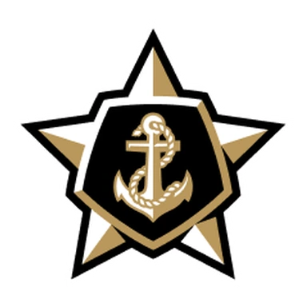

Северсталь — Лада итог матча 9 ноября
- ТурнирКХЛ
Коротко о матче
Северсталь — Лада 4:3: хозяева победили.
По форме команды были близки: в пяти последних матчах Северсталь — 2 победы, Лада — 3 победы. По голам за эти пять матчей: Северсталь — в среднем 1,8 забито и 2,4 пропущено, Лада — 1,2 и 2,0.
Матчи этих команд обычно скупы на голы: больше 5,5 шайб — лишь в 3 из 16 последних. Стоит учесть и площадку: дома Северсталь — 7 побед в 10 матчах, на выезде Лада — 1 победа в 10. До этого команды встречались 11 марта 2026 года: Лада — Северсталь 1:3.
Форма: последние матчи
 Северсталь 2 победы из 5
Северсталь 2 победы из 5
 П0:1
П0:1- В3:2
- П1:5
 П1:3
П1:3- В4:1
 Лада 3 победы из 5
Лада 3 победы из 5

П1:3- В3:2
- В1:0
 П0:5
П0:5- В1:0
Личные встречи
- Лада1:3Северсталь
- Северсталь4:2Лада
- Лада2:3Северсталь
- Северсталь2:0Лада
- Лада1:0Северсталь
- Северсталь0:3Лада
Положение в таблице
| Команда | Место | И | В | П | Голы | Очки |
|---|---|---|---|---|---|---|
| 6 | 25 | 14 | 11 | 59:57 | 30 | |
| 11 | 26 | 6 | 20 | 42:84 | 17 |
Другие матчи КХЛ в этот день
Куда дальше
Все прогнозы дня — в TelegramПрогнозы на КХЛ, НХЛ и футбол, итоги каждое утро. Бесплатно.
Открыть каналМатериалы носят информационный характер и не гарантируют результат. Реклама букмекеров на сайте не размещается. Сайт только для совершеннолетних (18+).